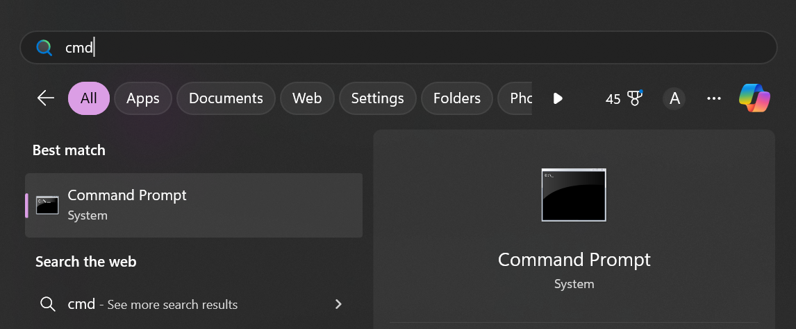
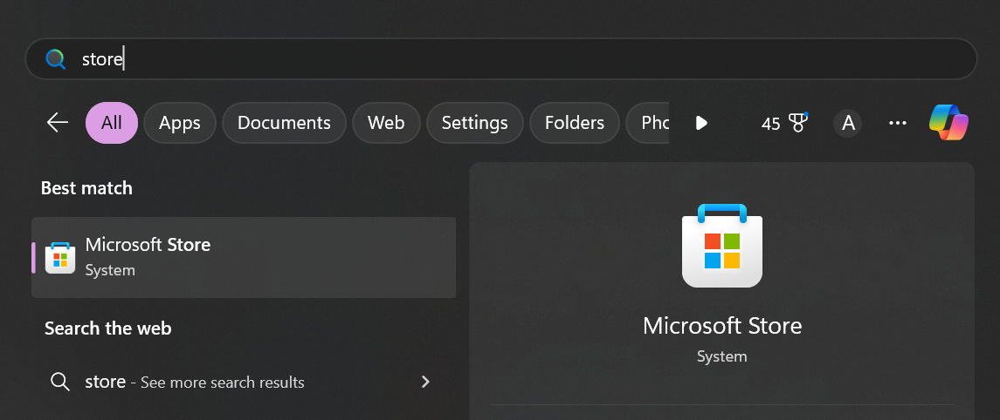
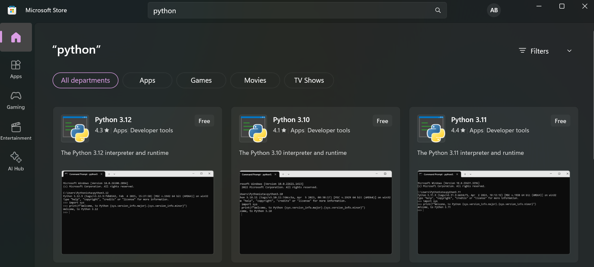

Installing Python
In this guide, we discuss how to install a Python interpreter.
Windows
Verify Installation
First, we will confirm whether Python is already installed on your computer. Start by opening up the Windows Command Prompt. This can be done from the Start Menu by searching for "command prompt", or "cmd".
If Python is already installed, you should get a response displaying the current version of Python (we are using version 3.13.2). If this is the case, Python is setup and ready to use.
$python -V
Python 3.13.2
If Python is not installed, you may get a response similar to the following:
$python -V
Python was not found; run without arguments to install from the Microsoft Store, or disable this shortcut from Settings > Apps > Advanced app settings > App execution aliases.
Install Python
To install Python, start by opening the Microsoft Store. This can be done by searching for "store" in the start menu.
Once the Microsoft Store has been opened, search for "python" and download the latest version (3.13 as of this time of writing).
Once the installation completes, verify it was properly installed by following the steps in the verify installation section.